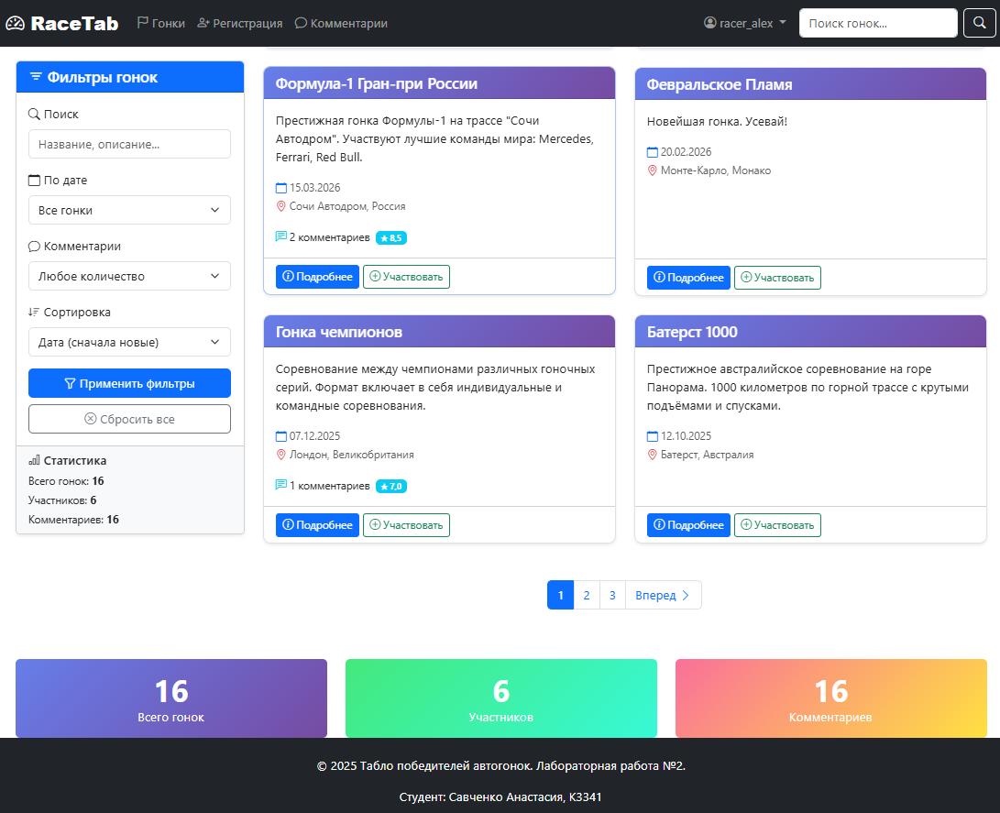
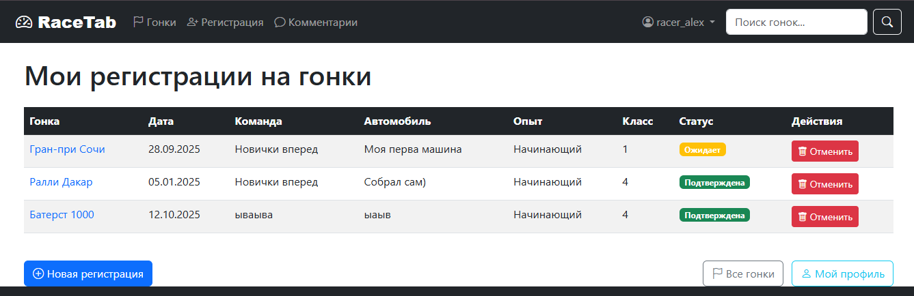
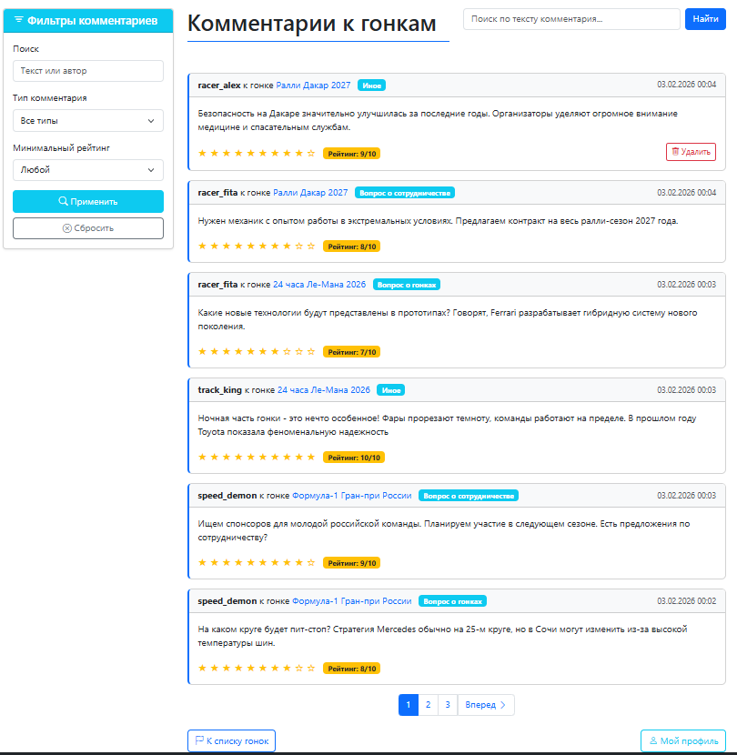

Лабораторная работа 2. Реализация простого сайта на Django
Цель
Овладеть практическими навыками и умениями реализации web-сервисов средствами Django 2.2.
Практическое задание
Реализовать сайт используя фреймворк Django 3 и СУБД PostgreSQL *, в соответствии с вариантом задания лабораторной работы.
Для получения максимального балла
Чтобы продлить срок, необходимо:
- Реализовать меню (меню с бутсрап - https://www.youtube.com/watch?v=HEPTgggsRgY)
- Реализовать пагинацию страниц (так себе вариант - https://evileg.com/ru/post/10/ , отличный вариант - https://evileg.com/ru/post/237/)
- Внедрить поиск по объектам, с которыми настроена пагинация (https://evileg.com/ru/post/21/)
Требования
- Голый HTML это грустно и некрасиво. Если хотите получать максимальный балл, то разукрасьте свой мир с помощью ксс-ки и верстки. ChatGPT или любая другая LLM в помощь.
- Внимательно отнеситесь к последнему заданию-пункту в каждом варианте. Концепция заключается в том, чтобы на стороне клиента (не админки) было разделение прав админа и юзера, чтобы админ мог видеть и делать больше чем пользователь
- Подумайте немного над вашей моделью данных. Будет ли ее удобно использовать если бы это был ваш маленький пет-проект?
- В тексте лабы на гите так же описано что на максимальный балл надо реализовать пагинацию и фильтрацию. Не забывайте про этот пункт
Вариант 6: Табло победителей автогонок
Табло должно отображать информацию об участниках автогонок:
- ФИО участника
- Название команды
- Описание автомобиля
- Описание участника
- Опыт и класс участника
Необходимо реализовать следующий функционал:
- Регистрация новых пользователей
- Просмотр автогонок и регистрацию гонщиков. Пользователь должен иметь возможность редактирования и удаления своих регистраций
- Написание отзывов и комментариев к автогонкам. Предварительно комментатор должен зарегистрироваться. При
добавлении комментариев должны сохраняться:
- Даты заезда
- Текст комментария
- Тип комментария (вопрос о сотрудничестве, вопрос о гонках, иное)
- Рейтинг (1-10)
- Информация о комментаторе
- Администратор должен иметь возможность указания времени заезда и результата средствами Django-admin
- В клиентской части должна формироваться таблица всех заездов и результатов конкретной гонки
Описание реализации
Структура проекта
Проект реализован на Django 6.0.1 (+ django-bootstrap3==26.1) с использованием SQLite для хранения данных.
Структура проекта организована следующим образом:
laboratory_work_2/
├── db.sqlite3 # База данных SQLite
├── manage.py # Основной файл управления Django
├── requirements.txt # Зависимости проекта
│
├── raceapp/ # Основное приложение
│ ├── migrations/ # Миграции базы данных
│ │ └── __pycache__/ # Кэш Python
│ │
│ ├── templates/raceapp/ # Шаблоны приложения
│ │ ├── add_comment.html # Форма добавления комментария
│ │ ├── comment_list.html # Список всех комментариев
│ │ ├── edit_profile.html # Редактирование профиля
│ │ ├── home.html # Главная страница
│ │ ├── login.html # Страница входа
│ │ ├── logout.html # Страница выхода
│ │ ├── my_registrations.html # Мои регистрации на гонки
│ │ ├── profile.html # Профиль пользователя
│ │ ├── racer_register.html # Регистрация на гонку
│ │ ├── race_detail.html # Детали гонки
│ │ ├── race_list.html # Список всех гонок
│ │ ├── register.html # Регистрация пользователя
│ │ ├── registration_delete.html # Удаление регистрации
│ │ ├── search_results.html # Результаты поиска
│ │ └── registration_update.html # Редактирование регистрации
│ │
│ ├── __pycache__/ # Кэш Python
│ ├── admin.py # Настройка админ-панели
│ ├── apps.py # Конфигурация приложения (создан автоматически)
│ ├── forms.py # Формы Django
│ ├── models.py # Модели базы данных
│ ├── tests.py # Тесты (автоматически, пустые)
│ ├── urls.py # Маршруты приложения
│ ├── views.py # Обработчики запросов
│ └── __init__.py # Инициализация приложения (создан автоматически)
│
├── racetab/ # Настройки проекта (созданы автоматически)
│ ├── __pycache__/ # Кэш Python
│ ├── asgi.py # ASGI конфигурация
│ ├── settings.py # Настройки проекта
│ ├── urls.py # Корневые маршруты
│ ├── wsgi.py # WSGI конфигурация
│ └── __init__.py # Инициализация проекта
│
├── static/
│ ├── css/
│ │ └── style.css # css чтобы html не был совсем голым
│ ├── images/
│ └── js/
│
└── templates/
└── base.html # Базовый шаблон (бутстрап, навигация, футер)
🔧 Техническая реализация
Проект построен по классической MVC-архитектуре Django с четким разделением ответственности между компонентами.
Модели данных (models.py)
Созданы следующие модели в raceapp/models.py:
- User - кастомная модель пользователя (расширяет AbstractUser)
- Race - модель гонки
- Racer - регистрация участника на гонку
- RaceResult - результаты заезда
- Comment - комментарии к гонкам
Пример структуры модели Racer:
class Racer(models.Model):
EXPERIENCE_CHOICES = [
('beginner', 'Начинающий'),
('amateur', 'Любитель'),
('professional', 'Профессионал'),
]
user = models.ForeignKey(User, on_delete=models.CASCADE, related_name='racers')
race = models.ForeignKey(Race, on_delete=models.CASCADE, related_name='racers')
class Meta:
unique_together = ('user', 'race') # Уникальность регистрации
Анализ: Использование related_name создает удобные обратные связи (например, user.racers.all()). Ограничение
unique_together предотвращает дублирование регистраций на уровне базы данных.
Логика обработки запросов (views.py)
Пример реализации RaceListView с фильтрацией и пагинацией:
class RaceListView(ListView):
model = Race
template_name = 'raceapp/race_list.html'
paginate_by = 6
def get_queryset(self):
queryset = super().get_queryset()
# Комбинированный поиск по нескольким полям
search_query = self.request.GET.get('q')
if search_query:
queryset = queryset.filter(
Q(name__icontains=search_query) |
Q(description__icontains=search_query) |
Q(location__icontains=search_query)
)
# Аннотации для статистики
queryset = queryset.annotate(
avg_rating=Avg('comments__rating'),
comment_count=Count('comments')
)
return queryset
Анализ: Использование Q объектов позволяет создавать сложные запросы OR с поддержкой индексации. Аннотации Avg и
Count вычисляются на уровне базы данных, что значительно эффективнее чем обработка в Python.
Формы и валидация (forms.py)
Пример формы регистрации пользователя:
class CustomUserCreationForm(UserCreationForm):
email = forms.EmailField(required=True,
widget=forms.EmailInput(attrs={'class': 'form-control'}))
class Meta:
model = User
fields = ('username', 'email', 'first_name', 'last_name',
'password1', 'password2')
widgets = {
'username': forms.TextInput(attrs={'class': 'form-control'}),
}
Анализ: Кастомные виджеты с Bootstrap классами обеспечивают единообразие интерфейса. ModelForm автоматически генерирует HTML и выполняет валидацию на основе модели.
Административный интерфейс (admin.py)
Пример админ-панели для гонщиков:
class RacerAdmin(admin.ModelAdmin):
list_display = ('user', 'race', 'team_name', 'experience')
list_filter = ('experience', 'racer_class', 'race')
raw_id_fields = ('user', 'race') # Оптимизация производительности
Анализ: Использование raw_id_fields заменяет тяжеловесные SELECT на легкие текстовые поля для ForeignKey, что
критично для таблиц с тысячами записей.
Реализованный функционал
1. Аутентификация и авторизация
- Реализована регистрация новых пользователей с кастомной формой
- Система входа/выхода с использованием Django auth
- Разделение прав: пользователи, администраторы
Защита доступа в views.py:
@login_required
def my_registrations(request):
# Только авторизованные пользователи
pass
class RacerDeleteView(UserPassesTestMixin, DeleteView):
def test_func(self):
# Пользователь может удалять только свои записи
return self.get_object().user == self.request.user
Анализ: Декоратор @login_required и миксин UserPassesTestMixin обеспечивают двухуровневую защиту. Проверка прав
в test_func() предотвращает несанкционированный доступ.
2. Основные страницы
- Главная страница - статистика системы, ближайшие гонки
 - главная страница
- главная страница
- Список гонок - с пагинацией и фильтрацией
Фильтрация по дате, типу комментария, рейтингу
Поиск по названию гонок и тексту комментариев  - страница гонок с фильтрами
- Детали гонки - информация о гонке, участники, результаты, комментарии
 - страница деталей о гонке
- страница деталей о гонке
- Регистрация на гонку - форма для регистрации участника

- Мои регистрации - управление своими заявками

- Комментарии - просмотр всех комментариев системы
3. Пагинация и фильтрация
- Пагинация реализована на странице комментариев
 - страница коментов с фильтрами
Особенности реализации фильтрации: Система фильтрации поддерживает сохранение параметров при пагинации:
def get_context_data(self, **kwargs):
context = super().get_context_data(**kwargs)
params = self.request.GET.copy()
if 'page' in params:
del params['page']
context['query_params'] = params.urlencode() # Сохраняем фильтры
return context
Это позволяет пользователям переключаться между страницами без потери настроек фильтрации.
4. Административная часть
- Настроена админ-панель Django для управления всеми моделями
- Администратор может подтверждать регистрации на гонки и загружать результаты через админ-панель
- Удобные интерфейсы с фильтрацией и поиском
5. Оптимизация производительности
Ключевые методы оптимизации:
-
Select Related: В запросах используется
select_related()для жадной загрузки связанных объектов: -
Аннотации: Статистические данные вычисляются на уровне БД:
-
Пагинация: Все списковые представления используют пагинацию:
Установка и запуск
- Перейти в директорию проекта
cd .\students\k3341\Savchenko_Anastasia\laboratory_work_2\ - Установить зависимости:
pip install -r requirements.txt - Применить миграции:
python manage.py migrate - Создать суперпользователя:
python manage.py createsuperuser - Запустить сервер:
python manage.py runserver
Проект доступен по адресу: http://localhost:8000
Выполнение требований у
- ✅ Реализовано меню с Bootstrap 3 (навигационная панель в
base.html) - ✅ Реализована пагинация на страницах гонок и комментариев
- ✅ Реализован поиск по гонкам и комментариям с сохранением параметров в пагинации
- ✅ Реализована фильтрация по различным критериям
- ✅ Разделение прав администратора и пользователя
Дополнительные улучшения
- Отображение среднего рейтинга гонок
- Визуальная индикация активных фильтров
- Статистика системы на главной странице
- Уведомления об успешных операциях
- Оптимизированные запросы с использованием select_related и аннотаций